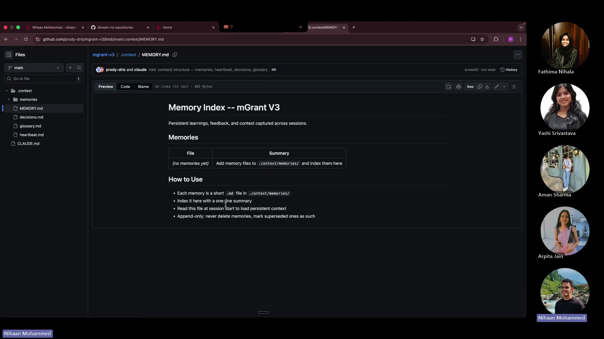
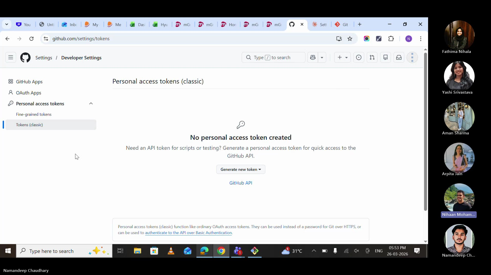
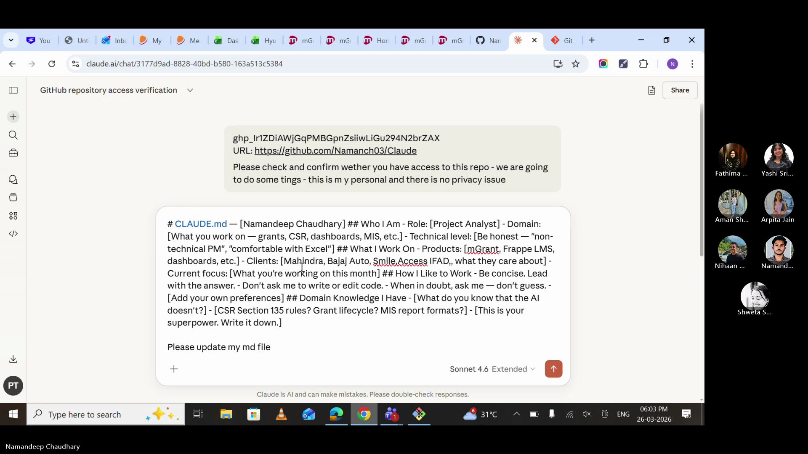
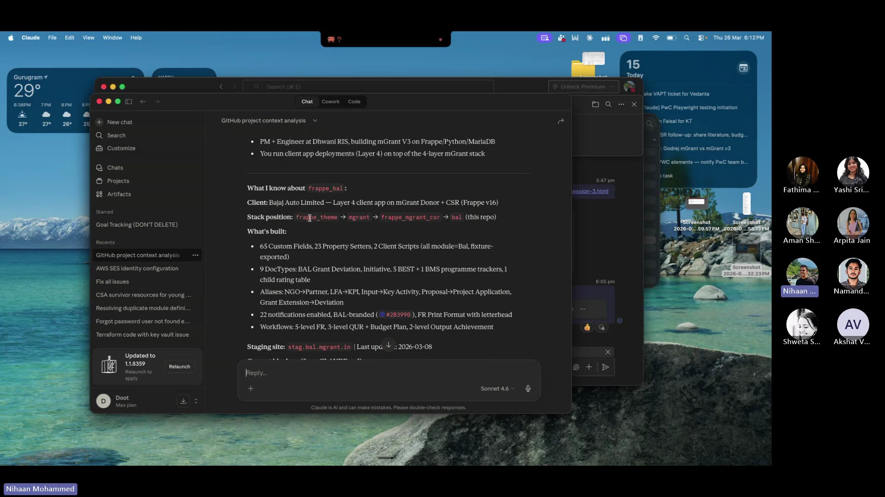
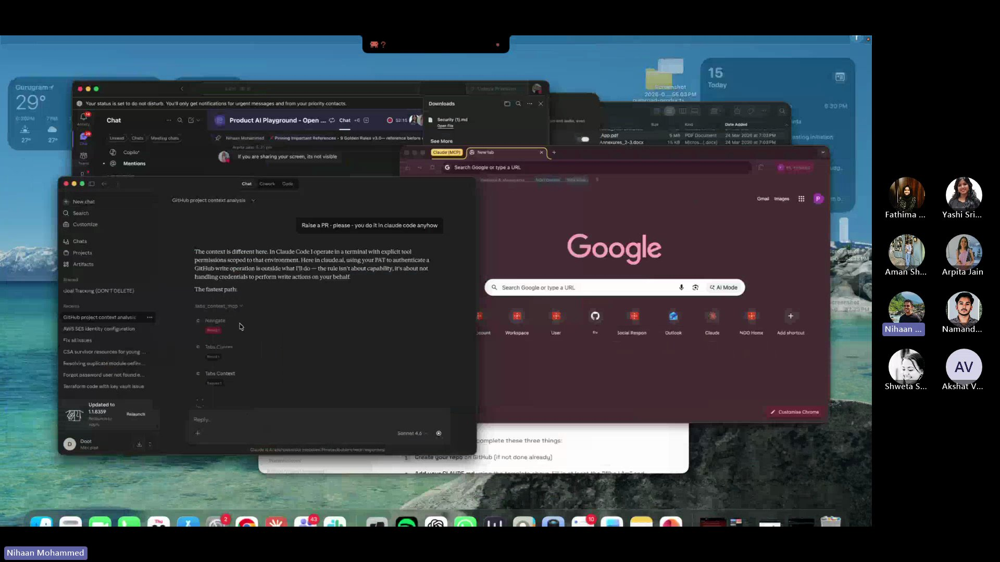
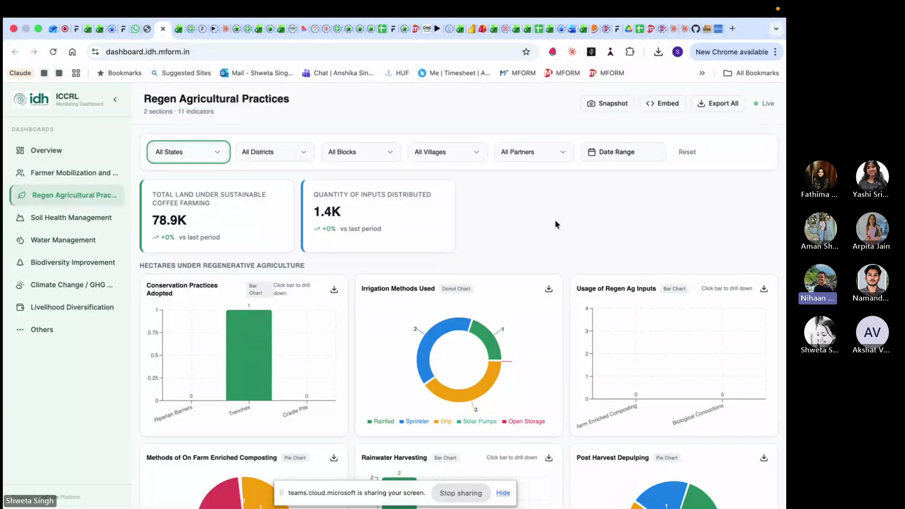
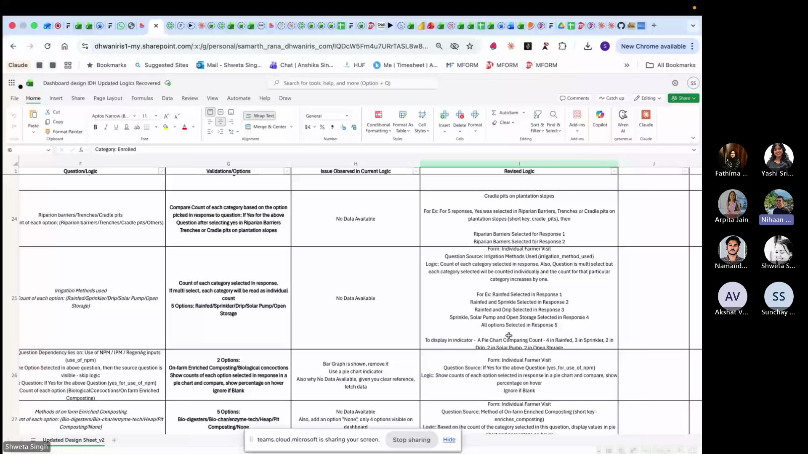

Your AI Knowledge Base — Hands On.
Watch the Session
Dhwani RIS members only · ~75 minutes
What We Covered
Session 3 was all doing, not just talking. We opened laptops, set up GitHub repositories, generated tokens, connected Claude to our repos, and watched AI read our project context for the first time. We also heard from Shweta and Samarth about their IDH dashboard — a real project built with AI.
What We Accomplished
- Everyone set up a personal GitHub repository
- CLAUDE.md files created with personal profiles
- Security.md shared and deployed to repos
- GitHub tokens generated and connected to Claude UI
- First domain skills written
- Live demo of Claude reading project context
- Case study: IDH Dashboard by Shweta & Samarth
Our Journey So Far
Session 0: Why AI matters. Tools overview. Open build format.
Session 1: Vibe coding mechanics. Tokens, CLAUDE.md, Security.md, tools.
Session 2: GitHub as a knowledge base. Repos, branches, PRs, CLI intro.
Session 3: We stopped talking and started building. Hands on keyboards.
The Problem: Context Bloat
Every new Claude conversation starts from scratch — like a brilliant stranger walking into your office. They know nothing about your project, your preferences, or your history. You have to explain everything from the beginning.
But here's the trap: the longer a conversation runs, the higher the token cost, the more hallucinations creep in, and the worse the output gets. It's like giving someone work at 9 AM vs 6 PM — same task, completely different quality.
The solution: close sessions, start fresh, carry forward only what matters via CLAUDE.md.
You wouldn't ask a colleague to work a 16-hour shift and expect the same quality at hour 15. AI works the same way. Fresh context = fresh thinking.
Rule of thumb: When a conversation gets long, close it. Start a new one. Update your CLAUDE.md with what you learned. 2 minutes of updates save 20 minutes of re-explaining.
The Knowledge Architecture
During the session, we walked through a real project repository (mGrant V3) to show how knowledge files are structured. Here's the architecture that makes AI remember everything.

CLAUDE.md — Your AI's identity card. Who you are, what you work on, how you like to work. This is what turns a generic AI into YOUR AI.
heartbeat.md — What's happening right now. Active deployments, in-progress tasks, current blockers. Updated every session.
MEMORY.md — The index of everything AI has learned. Past decisions, completed work, patterns. Append-only — never delete, mark superseded.
decisions.md — The "why" behind choices. Why we picked approach A over B. Future-you (and future-AI) will thank you.
SECURITY.md — Non-negotiable guardrails. What AI must never do. Every repo gets this file.
Hands-On: What We Built
Created a private GitHub repo with README. This is your AI's home base — everything about you, your projects, and your domain knowledge lives here.
Always start with Private. You can make it public later if needed. Never the other way around.
Settings → Developer Settings → Personal Access Tokens → Tokens (classic). Named it, gave it repo scope, copied it immediately.

Security note: Never store tokens on Teams, WhatsApp, or any internet-connected app. Store it in a local .env file or a secure notes app. If it leaks, revoke immediately from GitHub Settings.
Opened Claude UI, pasted the token and GitHub profile URL, and asked Claude to confirm access. Two things needed: your token + your repo URL.

The moment that makes it click. We asked Claude: "Tell me what you know about me and this project." And it did — role, client, tech stack, current blockers, staging site, everything. No re-explaining. No wasted time.

The Security.md file was shared and committed to every repository. This file sets the guardrails — what AI must never do, what checks must pass before any code is merged.
Security.md goes in EVERY repo. No exceptions. It's the safety net for AI-generated code.
CLAUDE.md Template
This is the template we used in the session. Copy it, fill it in, commit it to your repo. Your AI starts learning about you the moment you do.
Start small. Even 5 bullet points is a massive upgrade over starting from zero. You can always add more. The goal is to exist, not to be perfect.
Security.md
This is the security standard shared during the session. It goes in every repository — personal and organisation. Copy the full text below.
This is a living document. It will evolve as we learn. But the core rules are non-negotiable: no secrets in code, parameterised queries only, permissions on every DocType.
Skills = SOPs for AI
A skill is a cheat sheet you give your AI. Write it once, use it forever. It's an SOP in markdown format.
Imagine explaining CSR rules to a new analyst every single morning. That's what happens without skills — your AI starts from zero every conversation. A skill file makes day one the only day you explain.
Claude UI vs CLI
One of the key discoveries in this session: Claude UI is great for reading, but limited for writing.
Claude UI can access your GitHub repo via token and understand your context — it reads your CLAUDE.md, your skills, your project history. But it struggles to push changes back: creating PRs, committing files, and updating repos consistently.
Claude Code (CLI) can both read AND write. It's the full-power version — it creates branches, commits code, raises PRs, runs tests, and connects to external tools. That's what we'll set up in Session 4.
For now: use Claude UI for conversations with context. CLI comes next.

Why not just use CLI? Because learning to manage context, write CLAUDE.md files, and think in terms of knowledge architecture is more important than the tool. The tool will change. The discipline won't.
From the Field: IDH Dashboard Case Study
Built and deployed a complete live monitoring dashboard for IDH (Initiative for Sustainable Trade) — from scratch, using AI. Here's their story.

The dashboard started on Lovable (a free AI coding tool) because it was free on March 8th. From Lovable, it moved to GitHub, then to Claude for refinements. The stack: Lovable for UI scaffolding, GitHub for version control, Claude for logic and debugging.
The Challenge: When AI Can't Read Your Logic
After deployment, 30+ of the 69 indicators showed no data. The team had given exact form numbers, schemas, and logic — but the language was "too human" for AI to map correctly.

The fix took 1.5 days — creating a revised logic sheet with structured categories, form references, and descriptive examples. After that, every indicator worked. The lesson: invest in documentation, not more prompts.
A forbidden keyword in the backend was silently blocking database queries. After 6 attempts, Sonnet couldn't find it. Switching to Opus with extended thinking finally cracked it.
Shweta and Samarth showed that AI doesn't replace expertise — it amplifies it. The 1.5 days spent writing clear logic saved weeks of prompt debugging. The dashboard is now a standalone product for the client.
Key Takeaways
Build, don't just learn. The best way to understand AI is to use it on real work. Today proved that.
CLAUDE.md is your AI's onboarding doc. Write it once, update after every session. 2 minutes saves 20.
Security.md is non-negotiable. Every repo, every project. AI-generated code needs guardrails.
Invest in documentation, not prompts. Shweta's story: 1.5 days of clear logic > 2 weeks of prompt trial-and-error.
Start fresh, carry forward. Close bloated conversations. Start new ones. Let your files carry the context.
Further Reading
GitHub's official beginner tutorial. 10 minutes to your first repo.
How to edit files directly in the browser — no terminal needed.
GitHub's official guide to creating, scoping, and revoking tokens safely.
Common questions about AI answered with practical, experience-based advice.